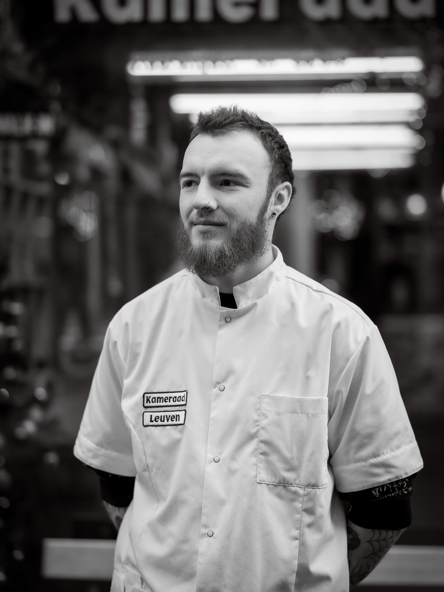
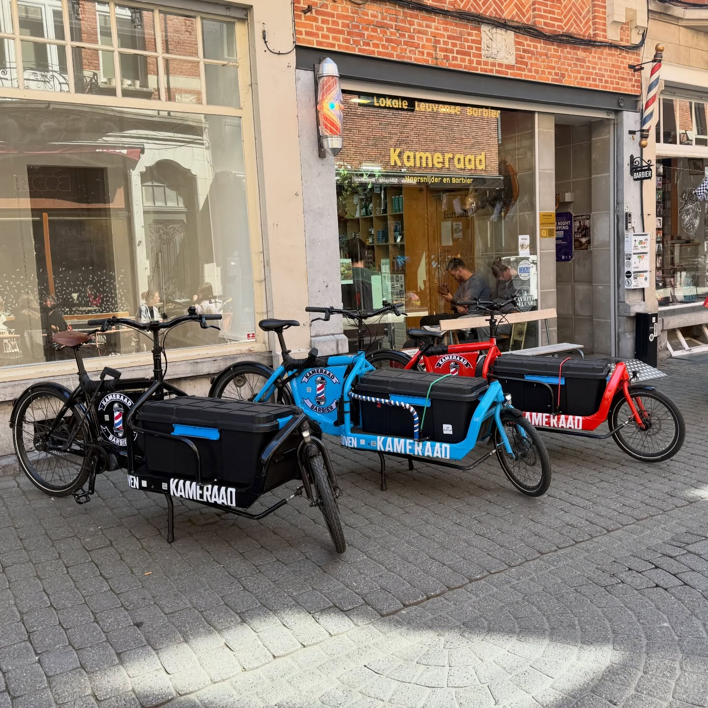
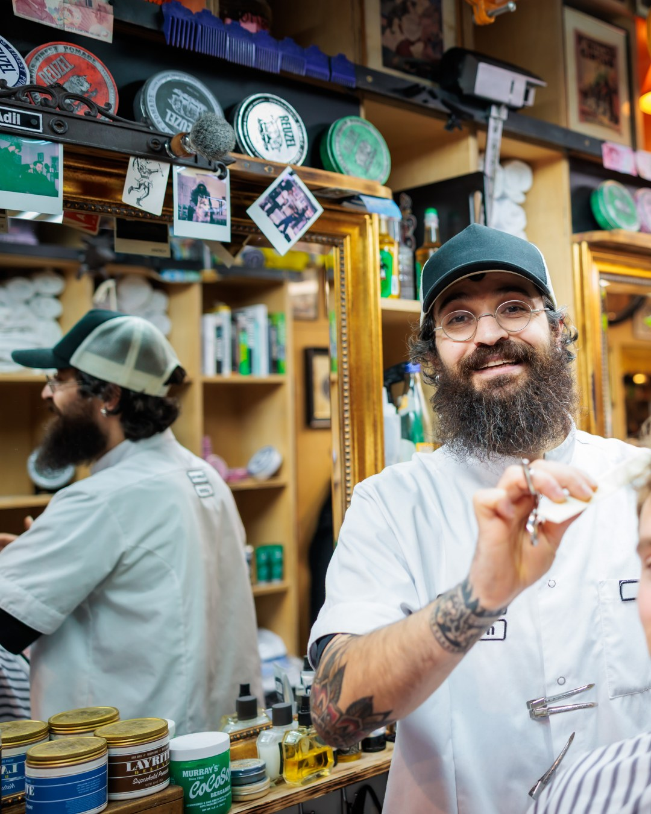
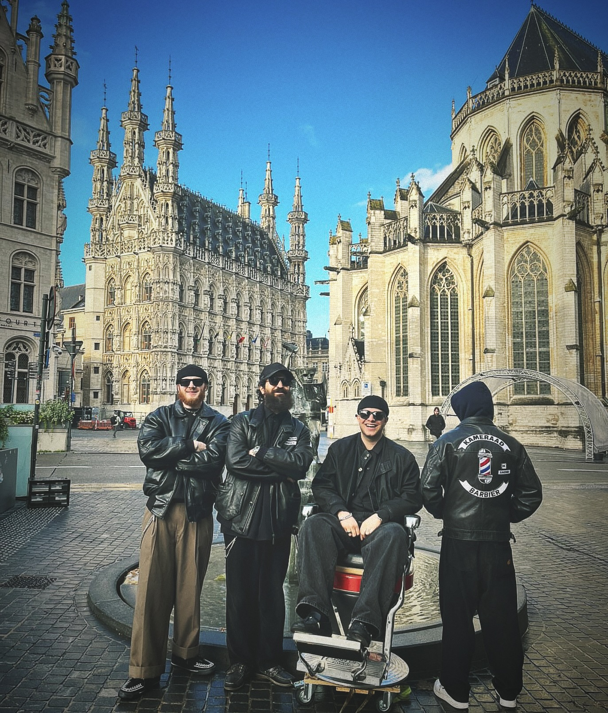
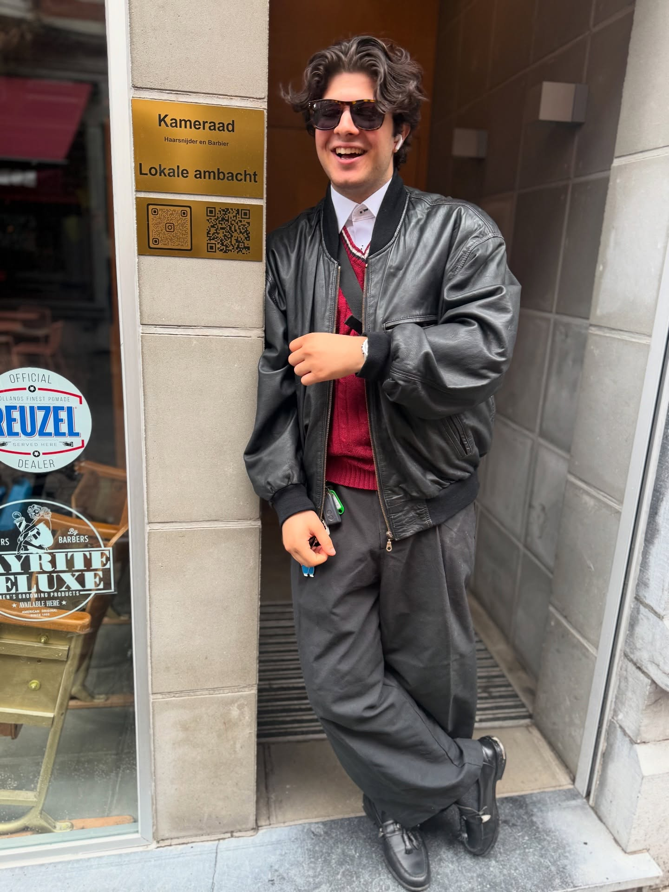

Brand Guide
“A gentleman's retreat — the last refuge for men of all ages.”
Prepared for development handoff
Claude · Hermes
Claude · Hermes
Parijsstraat 29, 3000 Leuven
kameraadhaarsnijder.be
kameraadhaarsnijder.be
“A gentleman's retreat — the last refuge for men of all ages.”
Kameraad Haarsnijder is a vintage barbershop in the heart of Leuven — and far more than a place for a haircut. It is a refuge: warm wood, white tile, the unhurried ritual of being looked after. Even those who don't book are welcome to pause from the everyday.
This system distils that world into a reusable kit. It keeps the vintage soul — gold on ink, warm paper, black-&-white portraiture — but trades heavy gold-textured headers for clean, simplified typographic ones. The brief, in the client's words: less is more.
A calm pause, not a transaction.
Quiet mastery, no showboating.
Vintage soul, modern hand.
The mark is a custom gold-textured lockup: all-caps KAMERAAD over a brush-script HaarSnijder, framed by fine line flourishes. It is a fixed image asset — never re-typeset, recolour, or rebuild it. Give it room and a quiet ground.
Primary — gold on ink. The default, preferred lockup.
Gold on warm paper. For light grounds.
Reversed / mono white — for busy photography or single-colour print.
Keep clear space around the mark equal to the height of the K in KAMERAAD on all sides. Minimum legible width: ~140px on screen, ~28mm in print.
Centre it for brand moments (hero, cover). On the site the gold mark sits fixed at top-centre only on the hero — larger and prominent — and fades out as you scroll into the content. Each downstream surface (video, social, email) carries the logo in its own header instead.
Gold is a seasoning, not a sauce. Most of any layout is paper or ink with a single gold moment. Never introduce new hues — no purples, no bright UI colours.
| Token | Light (default) | Dark (.on-ink) |
|---|---|---|
--bg | paper | ink |
--surface | white | ink-2 |
--fg1 | ink | paper |
--fg2 | #4A453C | #C8C1B2 |
--accent | gold | gold-bright |
--border | ink @ 14% | gold @ 18% |
Add .on-ink (or [data-theme="ink"]) to any dark section. Every semantic token re-points automatically — build components against --fg1 / --surface / --accent, never the raw palette, and they work on both grounds.
Three families, exactly as used on the live site. Playfair Display — a high-contrast editorial serif — carries every large heading, in sentence case with a gold italic accent. Oswald — condensed caps, wide-tracked — is the label voice for eyebrows, nav, buttons and meta. Hanken Grotesk — a warm humanist sans — carries all body copy. All three are free Google Fonts.
Display & headings · 400–700 + italic · --font-serif
Labels, nav, buttons · 300–700 · --font-display
Body & UI text · 400–700 · --font-body
Lifted from the fine flourishes that frame the original gold wordmarks: a thin gold rule — fading in, a centred dot, fading out. Use it to frame a section opener or sit above an eyebrow. It replaces boxes and dividers. Defined as .km-ornament.
A 4px base step. Radii stay small — this is a slab-and-tile world, not a soft rounded one. Shadows are warm, low, and used sparingly; this brand whispers.
The signature elements from the live homepage, built against semantic tokens so each works on paper and ink. Buttons use Oswald caps with wide tracking and a small (2px) radius; hover lifts gold, press shifts to bronze. Full interactive recreations live in /ui_kits/website and Kameraad Homepage.html.
A glass pill, fixed bottom-centre, sticky across the page. A subtle gold border-glow pulses once you scroll past the hero.
Walk-ins welkom. Geen afspraak? Spring gewoon binnen — Di–Za, 10:00–20:00.
Numbered circles fill gold when active, become a ✓ when done; finished steps collapse to a single row showing the pick.

A signature footer moment — large Playfair Display set in caps with a photograph clipped through the letters.
Flat surface · hairline border or one soft shadow · 4px radius · B&W image for people. Never the rounded-card-with-coloured-left-border cliché. Let whitespace, not chrome, do the framing.
People in black & white — grainy, intimate, high-contrast. Place in warm natural colour — brick, wood, tile, tungsten light. Never over-saturate. Favour B&W for portraits, warm colour for the room and the street.






It sells a feeling — refuge, brotherhood, a pause — never a hard pitch. Confident but never loud. Speaks as “we” (the shop) to “you” (the guest). Dutch is native, with English alongside. No emoji, ever.
“Kameraad grew out of the idea that there was no such thing as a gentleman's retreat.”
“Even customers who do not purchase a service are always welcome to take a break from everyday life.”
“Holidays: check Instagram.”
| Principle | In practice |
|---|---|
| Person | “We” to “you”, friendly & honest |
| Casing | UPPERCASE labels & headings; sentence-case body |
| Language | Dutch first, English alongside |
| Emoji | None |
| Vibe | retreat · brotherhood · craft · calm · unhurried |
The brand leans on photography, the gold wordmark, and the hairline ornament rather than a UI icon set. The only native glyph is Instagram (the brand's sole active social channel). For any new UI affordances, use Lucide — thin, even-stroke — kept rare and gold or ink. (Substitution; the brand has no icon system of its own.)
Instagram only. Facebook / X / YouTube are not used — drop them.
When in doubt, a hairline ornament or a photograph beats an icon here. If you must use one, make it thin, single-colour, and infrequent.
Movement is slow and deliberate — the brand whispers. Content rises and fades in (short, ease-out); the hero photo, headline and footer drift on a gentle parallax; the little walk-in gentleman strolls as you scroll. No bounces, no infinite loops, and everything yields to prefers-reduced-motion.
--ease-out | cubic-bezier(.22,1,.36,1) — the house curve |
| Reveal | translateY + fade, ~600ms, on enter |
| Parallax | ±5–16% drift, viewport-relative |
| Hover | 120–250ms, gold lift; press = bronze + scale .97 |
Warm natural colour for place; high-contrast B&W for portraits and craft. Optional fine film grain. Letterbox on ink (#16140F) — never on white. Aspect ratios: 16:9 (feature), 9:16 (reels/stories), 1:1 (feed).
16:9 feature — lower-third: Oswald eyebrow over a Playfair line, on a bottom scrim. Keep text within the lower-left third.
Intro / outro — gold wordmark on ink, ~1.5s, framed by the ornament. Use to open and close every clip.
Transactional mail uses the same restraint: an ink header with the gold wordmark, a calm paper body, a single gold action, and an ink footer with the Instagram link. One clear message per email; no clutter, no stock badges.
Je stoel staat klaar. Hieronder de details — kom je toch liever zonder afspraak, walk-ins blijven altijd welkom.
Kameraad Haarsnijder & Barbier · Parijsstraat 29, 3000 Leuven
kameraadhaarsnijder.be · Di–Za 10:00–20:00
Booking confirmation — 560px column. Header / hero / body / single gold CTA / footer. Same structure for reminders & cancellations — only the title and copy change.
“Kameraad — je afspraak is bevestigd: za 14 jun 15:15, bij Adil. Tot snel. Afzeggen? Bel 016 00 00 00.”
One message, one action. Gold only on the CTA. Subjects in sentence case: “Afspraak bevestigd — za 14 jun.” No emoji. Sign off “Tot snel, kameraad.”
Everything is driven by CSS custom properties in one file. Consume the tokens; don't hard-code hex. Theme by adding .on-ink to dark sections.
colors_and_type.css | All tokens + .km-* helpers |
i18n.js | 5-language dictionary + window.KH switcher |
image-slot.js | Drag-drop photo slots (comforts) |
Kameraad Homepage.html | Reference build (desktop + responsive) |
Kameraad Mobile.html | Mobile design on iPhone frames |
README.md | Full brand & system notes |
SKILL.md | Agent-skill manifest |
/assets | Logos, wordmarks, photography |
/ui_kits/website | Interactive component recreation |
/preview | Design-system tab cards |
.km-display .km-h1 .km-h2 .km-h3 .km-eyebrow .km-label .km-lead .km-body .km-small .km-ornament
Headings are Playfair serif (use <em> for the gold italic accent); .km-eyebrow / .km-label are Oswald caps; body is Hanken.
<!-- 1 · load tokens --> <link rel="stylesheet" href="colors_and_type.css"> <!-- 2 · light by default --> <section> <p class="km-eyebrow">Intro</p> <h2 class="km-h2">Kom langs</h2> <button style=" background:var(--accent); color:var(--ink); border-radius:var(--r-sm)"> Boek nu </button> </section> <!-- 3 · dark: one class --> <section class="on-ink"> … same markup, themed … </section>
prefers-reduced-motion.localStorage.data-i18n, rich text with data-i18n-html, placeholders with data-i18n-ph. API: KH.t() / KH.setLang() / KH.onChange().Parijsstraat 29, 3000 Leuven · kameraadhaarsnijder.be
One channel, done well
Instagram is the brand's only active channel (@kameraadhaarsnijder). The grid alternates three beats: a B&W portrait, a warm-colour place, and an ink quote card with the gold ornament. Captions are warm and Dutch-first; a light, consistent hashtag set.

Feed rhythm — portrait · place · quote, repeating. Keep B&W and colour in balance; never two quote cards adjacent.
Story 9:16 — gold wordmark top, message + gold pill bottom.